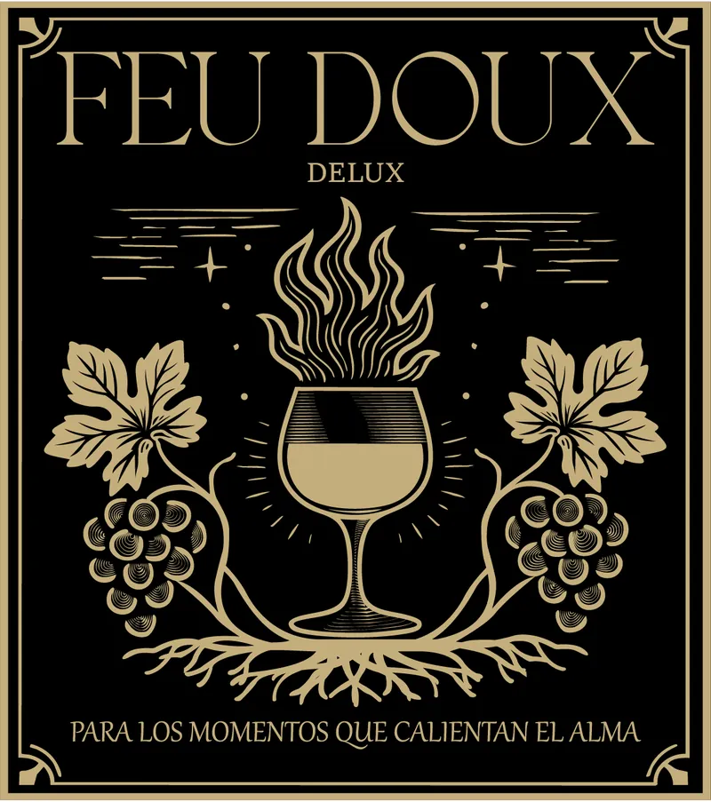

Feu Doux Delux

- Materia
- Diseño Gráfico, 3.er semestre, Universidad Simón Bolívar
- Herramienta
- Illustrator
- Trabajo
- Individual
El pedido
Elaborar la etiqueta de un vino, pensada como empaque, aplicando la técnica de grabado en Illustrator. El concepto y las bases los creamos nosotros mismos.
Mi rol
Me encargué desde el principio de los bocetos y las ideas. También de la búsqueda de la paleta de colores y de la tipografía, de definir los conceptos y de armar el mood board.
La idea
«Feu Doux» significa fuego suave, fuego lento, en francés. La copa es por el vino y las llamas son el fuego de la amistad: una buena amistad se cocina de a poco. Una metáfora de las amistades profundas, construidas con calma y compartidas sin prisa.
«Pour les moments qui réchauffent l’âme.»
Para los momentos que calientan el alma. En versión local: «Para los que saben arder despacio».
Colores
Etiqueta negra con letras doradas. Toca un color para copiar su código.